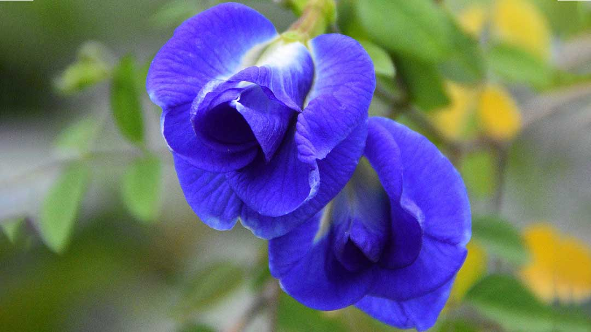
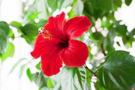
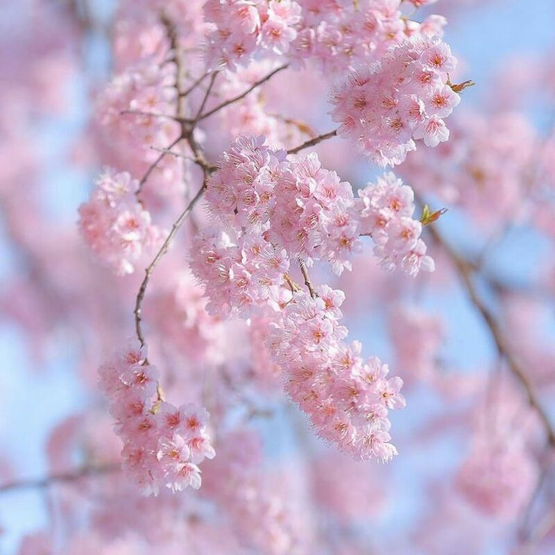
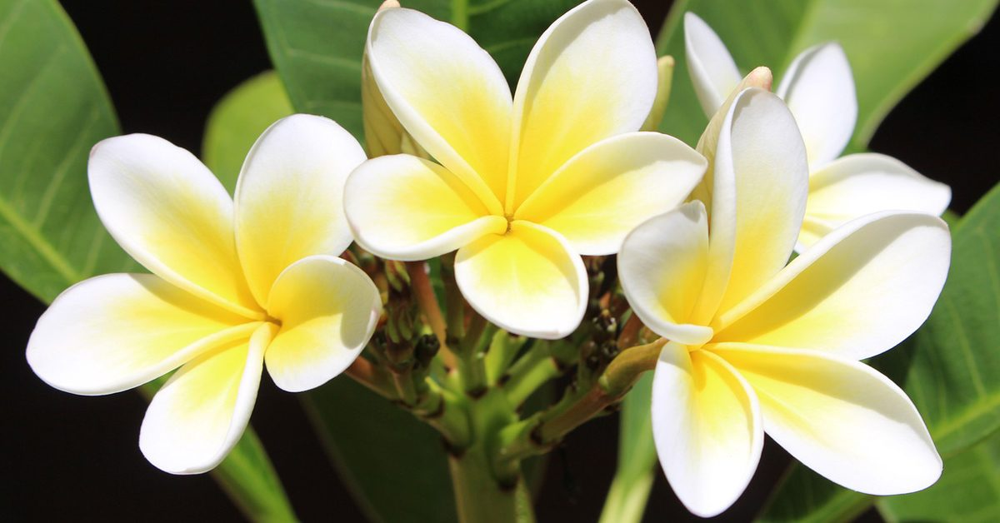
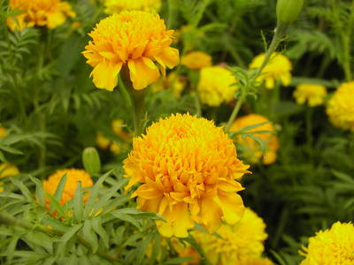

| อัญชัน |  | ข้อมูล | อัญชัน เป็นพืชล้มลุก ขึ้นได้ดีในเขตร้อน ลักษณะต้นเป็นไม้เถาเลื้อยขนาดเล็กใบเป็นใบประกอบ
ดอกอัญชัญ เป็นดอกเดี่ยว มีสีน้ำเงินเข้ม หรือน้ำเงินอมม่วง และสีขาว |
| ทานตะวัน | ข้อมูล | ทานตะวัน เป็นพืชล้มลุก (อายุต่ำกว่า ๑ ปี) ลำต้นสูงประมาณ ๑ - ๓ เมตร ใบมีขนาดใหญ่
ปลายแหลม และขอบใบเป็นจักร ช่อดอกเป็นจาน |
|
| ชบา |  | ข้อมูล | ชบา เป็นไม้พุ่มขนาดกลาง ใบค่อนข้างมนรี มีปลายแหลม ขอบของใบเป็นจักเล็กน้อย และมีสีเขียวเข้มอ่อน
เมื่อขยี้ใบจะเป็นเมือกเหนียว ดอกมีทั้งกลีบชั้นเดียวและหลายชั้น หากเป็นชั้นเดียวปกติจะมีกลีบดอก 5 กลีบ มีก้านเกสรอยู่ตรงกลางดอกหนึ่งก้าน |
| ซากุระ |  | ข้อมูล | ดอกซากุระ เป็นพืชไม้ดอกตระกูลเดียวกับพวกเชอร์รี่ มีลักษณะของลำต้นเป็นสีน้ำตาลเข้ม ใบเรียบเป็นวงรีสีเขียวสว่าง
ส่วนดอกนั้นจะมีทั้งสีขาว ชมพู ม่วง แดง และเหลือง สีของดอกกับลักษณะของกลีบจะซ้อนกันมากน้อยขึ้นอยู่กับสายพันธุ์นั้น ๆ |
| จำปา |  | ข้อมูล | จำปา ดอกเดี่ยว ออกตามซอกใบ กลีบดอกเป็นรูปหอกปลายแหลม มี 8-10 กลีบ ซ้อนกันเป็นสองชั้น สีเหลืองแก่ |
| ดาวเรือง |  | ข้อมูล | ดาวเรือง เป็นไม้ดอกต้นสูง 25-60 ซม. ใบเป็นรูปหอก ปลายแหลม ขอบหยัก ดอกเป็นช่อกระจุกเดี่ยวที่ปลายยอด
ดอกวงนอกกลีบดอกเป็นรูปรางน้ำ โคนเป็นหลอดเล็ก ปลายแผ่ ดอกวงในกลีบดอกเป็นหลอดมีหลายสี เช่น สีส้ม เหลืองทอง ขาว และสองสีในดอกเดียวกัน |